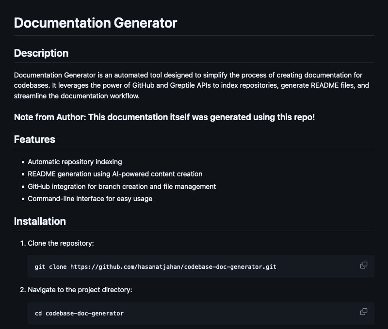
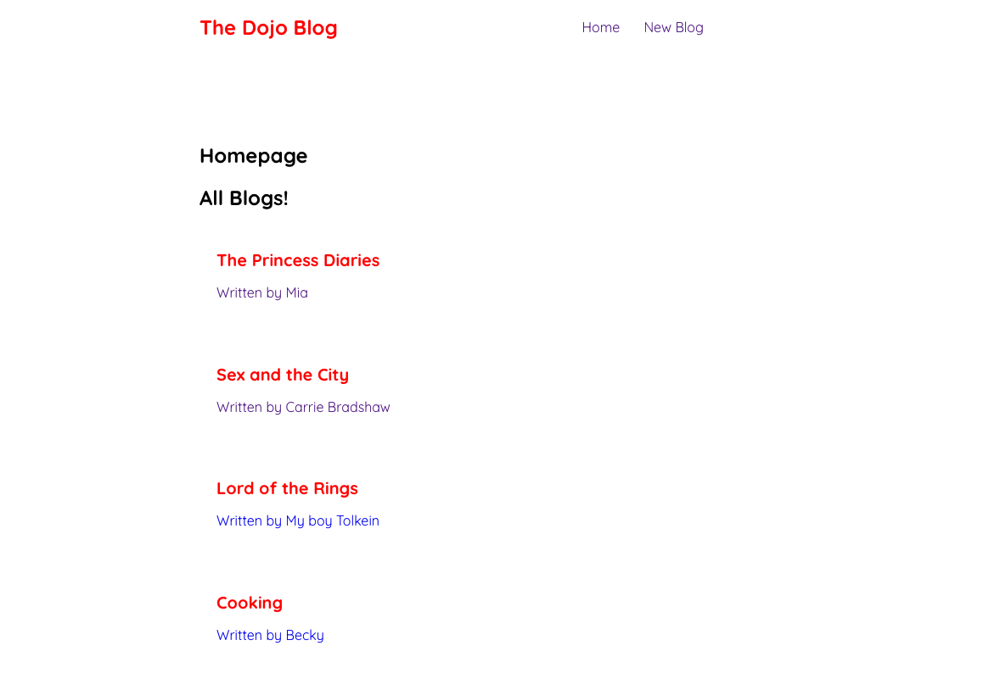
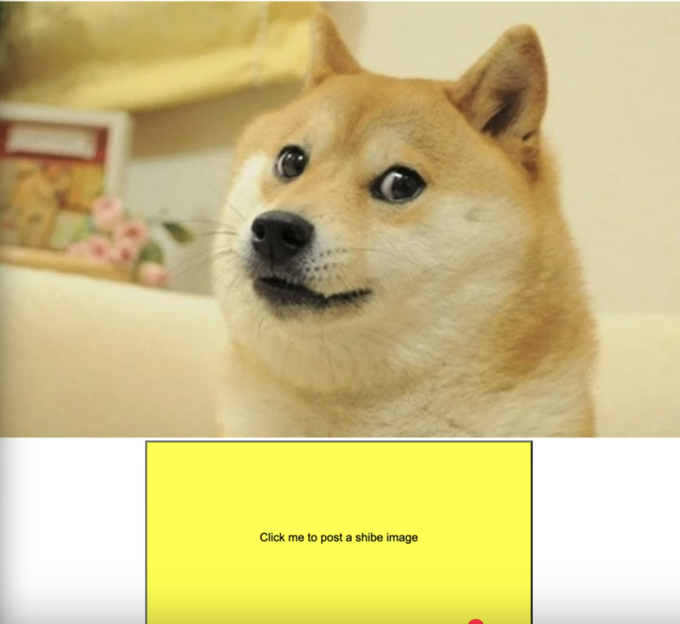
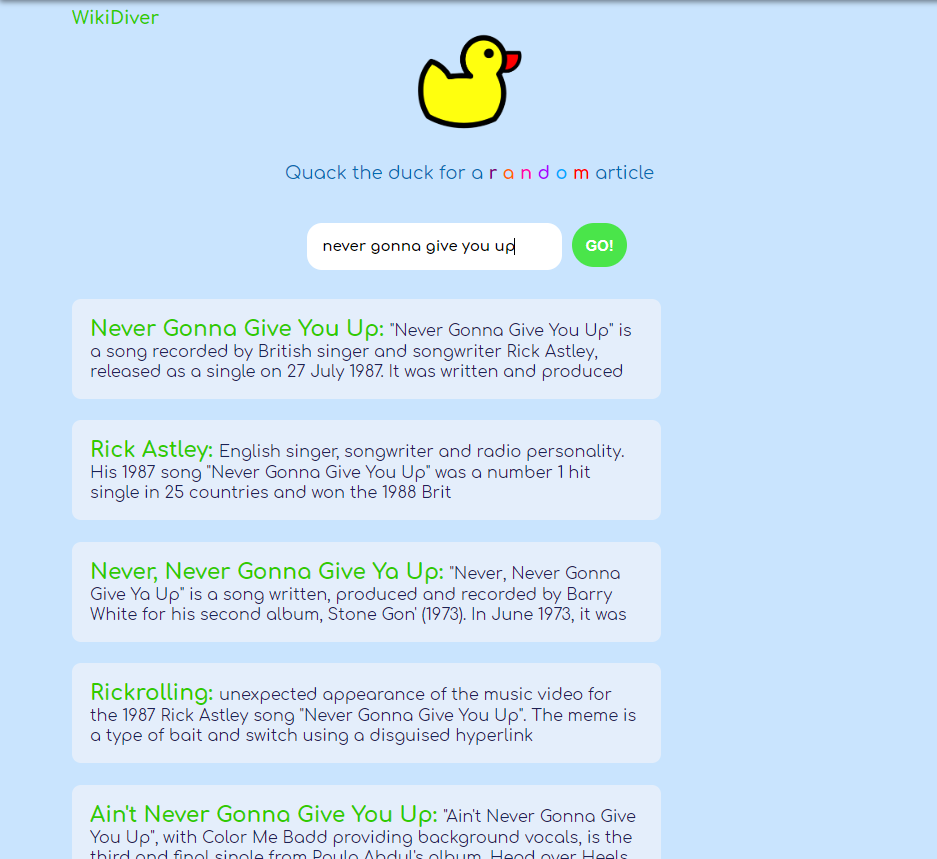

Hi There,
I'm Hasanat Jahan
Software Development Engineer
Results-driven Software Engineer with expertise in designing, implementing, and optimizing systems,
particularly in database technologies with a focus on Aurora.
Proven ability to collaborate with cross-functional teams and deliver high-impact solutions.
Previously contributing to Amazon Web Services' Aurora Team, known for a strong work ethic,
attention to detail, and positive team dynamics.
I like art, language, reading, writing and finding ideas in everyday life.
Personal Projects

Documentation Generator
Documentation Generator is an automated tool designed to simplify the process of creating
documentation
for codebases.
It leverages the power of GitHub and Greptile APIs to index repositories, generate README files, and
streamline the documentation workflow.
Unbeatable TicTacToe Using Minimax
Command-Line-Interface TicTacToe game played against a bot.
The Minimax algorithm implemented using Python ensures that the human opponent never wins.

React Blog App
A simple blog app built with React, featuring basic CRUD functionality,
client-side routing, and a JSON server for mock data.

CRUD App Backend
A simple backend API for managing products using Node.js, Express, and MongoDB.
Supports basic CRUD operations and JSON data exchange.

Imgur Shibe Poster
A web application that allows users to automatically post random Shiba Inu pictures to their Imgur
account with a single click.
This script automatically authenticates with the Imgur API and fetches random Shiba Inu images from
the shibe.online API, posting them directly to the user's Imgur account.
It includes automatic token caching for improved performance and uses timestamp-based titles for the
uploaded images.
Exploring an Extension of "Predicting the Present with Google Trends" by Choi and Varian by
Investigating Improved Baseline Features
Worked with a teammate to replicate the results of Motor Vehicle and Parts of "Predicting the
Present with Google Trends" by Choi and Varian.
We then extend the investigation to demonstrate that even if the trends data is helpful under
circumstances, a more rigorous and relevant baseline model using public Census data performs almost
just as well.
We worked to provide a direction that exemplified a caveat to directly using Google Trends data for
predictions.
Movie Review Sentiment Classification With Naive Bayes
Used Python to build a Naive Bayes Classifier that classfied sentiments of IMDB movie reviews to
with highest 89.712% accuracy with optimizations.

Wikipedia Searcher
Used JavaScript, jQuery to generate a response from the 3rd Party MediaWiki API to allow the user to
search queries in a search box to find Wikipedia articles, and find random articles with a click of
a button.
Quack the duck for an interesting surprise
Dadjoke Generator- The Random Quote Generator
Used JavaScript to extract JSON data to generate a response from the 3rd Party Reddit API to display
jokes from the famous dad joke thread to allow the user to find agony with a click of a button. It
also allows the user to tweet about the website below each quote.
Online Weather Viewer
Used JavaScript that used JSON data from successful API responses to display the weather of the
user’s current location with a temperature toggle and weather icon
Word Similarity with Word2Vec
Used Python to train a Word2Vec Model to calculate similarity between words in vector space.

Maximum Likelihood Estimate Language Modeling
Used Python to build and train generative Maximum Likelihood Models including unigram MLE model,
bigram MLE model and bigram MLE model with add-one smoothing. The models were evaluated through
perplexity calculations.
Portfolio
Personal portfolio page built from scratch using raw HTML and CSS.